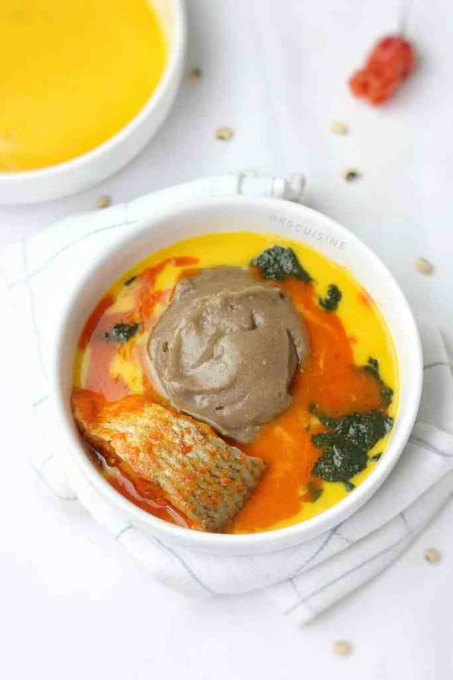

Amala Recipes

Description
Amala is a Nigerian delicacy made of yam flour cooked in boiling water until it forms a dough. The dough is
kneaded to become smooth and lump-free the trademark of a perfect amala.
While yam flour is white, it changed in color when dried, which is why amala is brown.Amala is a lot similar to
fufu, but a bit softer. Just like its cousin, it's also typically eaten with soups such as ogbono and egusi.
Ingredients
Baking & Spices
Liquids
- 4 cups (1000ml) Water
- 1 cup (250ml) hot water (reserved)
Steps or Instructions
-
Boil water in electric kettle and measure 4 cups into a pot.
-
Cover the water and let it boil till it starts making bubbles like in the picture below.
-
Lower the heat to a bare minimum and add the yam flour into the water all at once then stir/turn with wooden
spoon or spatula (omorogun) till it comes together but it won't be smooth at this stage. This process takes
about a minute.
Tip: Note that number one mistake most people make is stirring and adding yam flour little at a time.
That method will make the amala lumpy. Put in all the yam flour first before stirring.
-
Add the reserved 1 cup of water to the Amala using the wooden spoon to create well in the middle and sides
(Check picture below) and leave the water to steam the amala for 1-2 minutes.
-
Now stir the amala for 1-2 minutes till smooth. After this time some put it down and turn. If you are making
large quantity you might find this helpful but with this quantity it's not necessary really but if you find
it easier bring it down and turn .
-
Enjoy with Ewedu, Gbegiri , Fresh fish stew , Ogbono , Okra or any other soup of your choice.